Galleria Foto
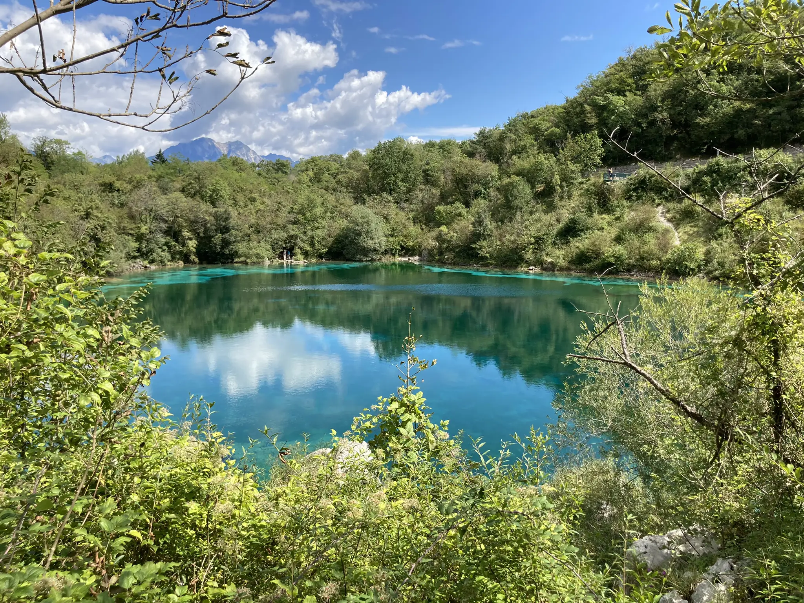
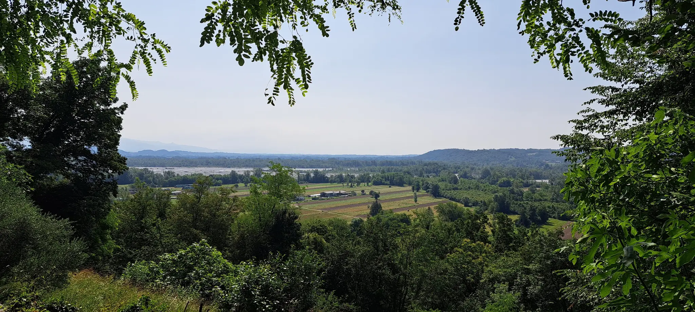
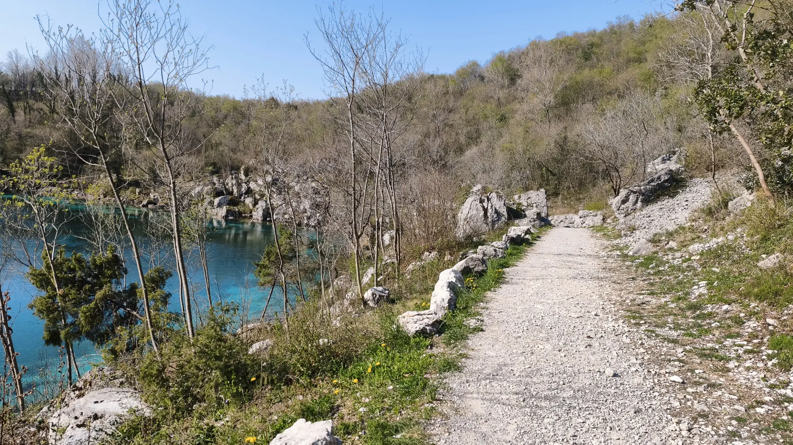
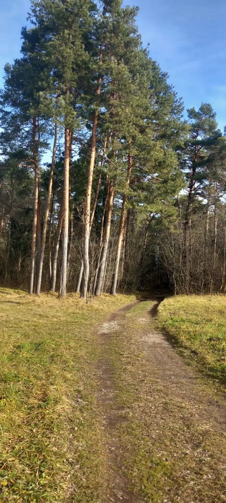
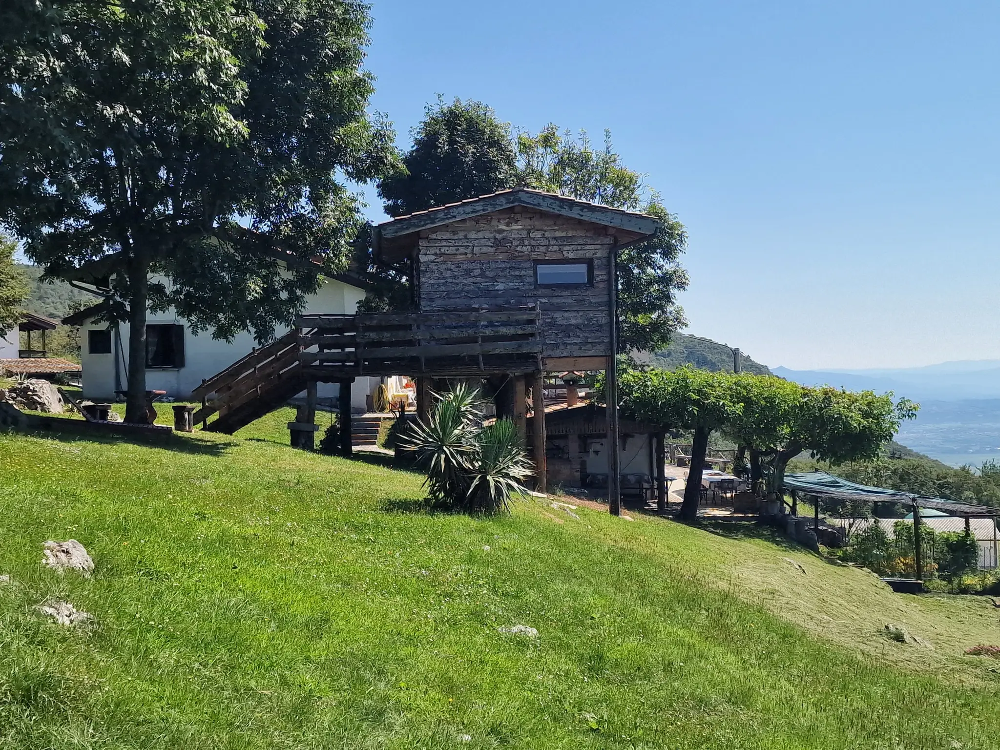
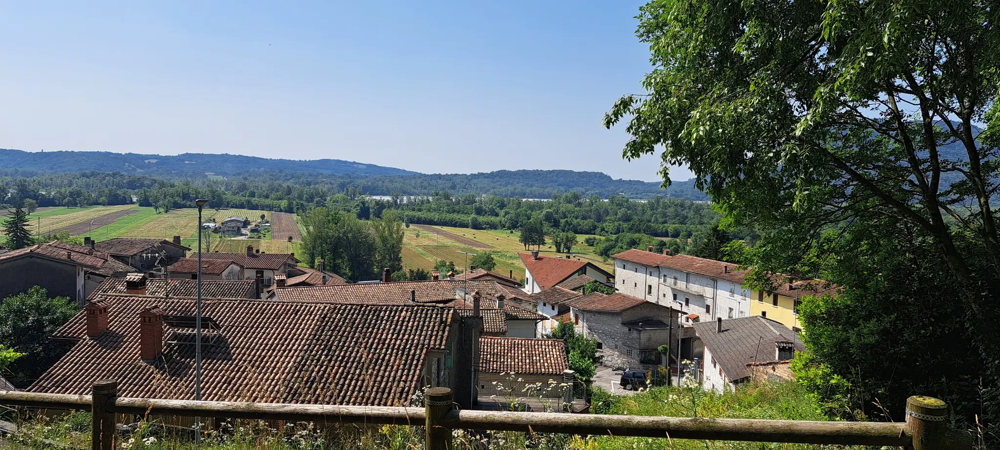
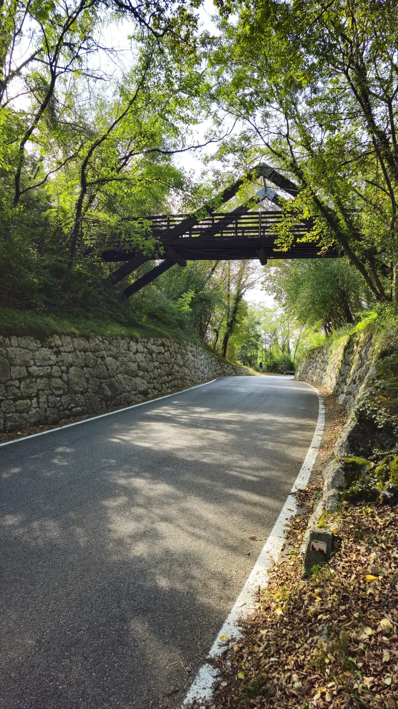
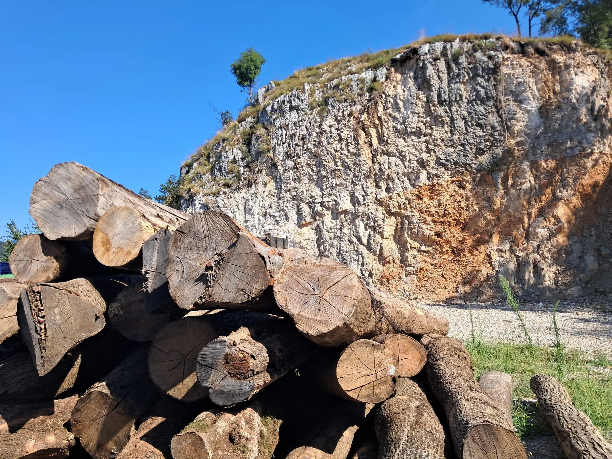
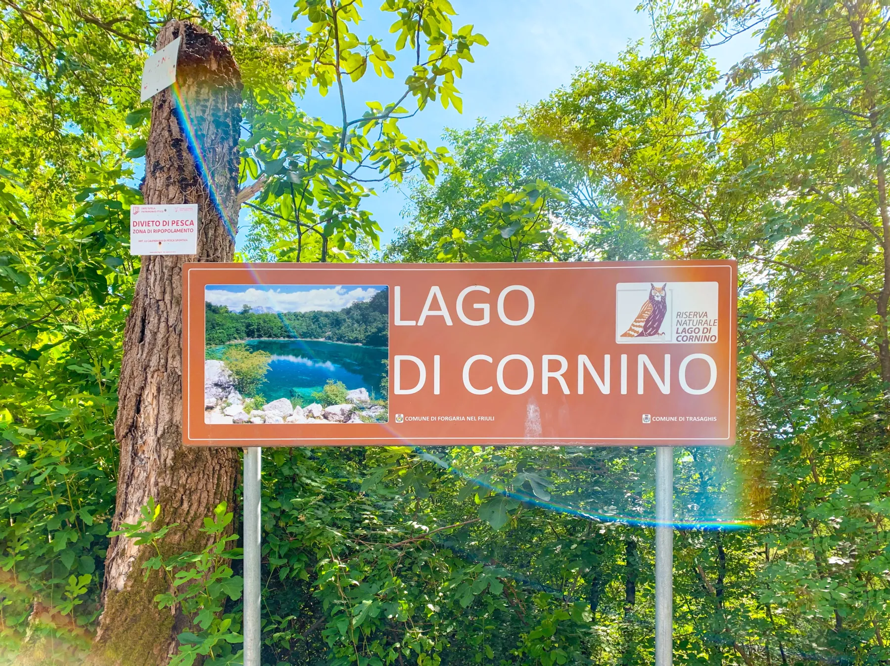

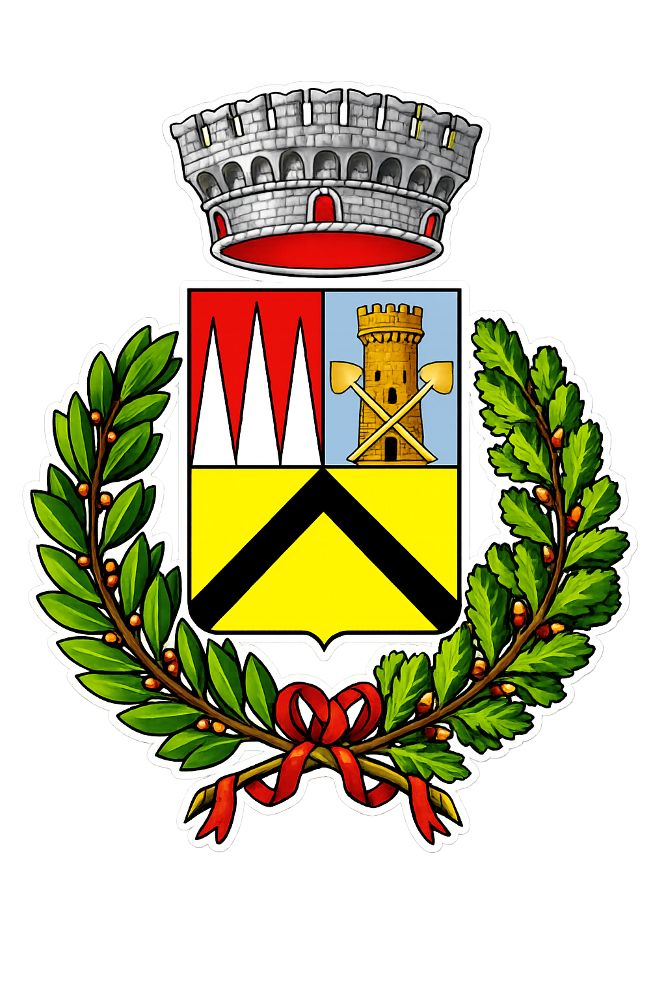
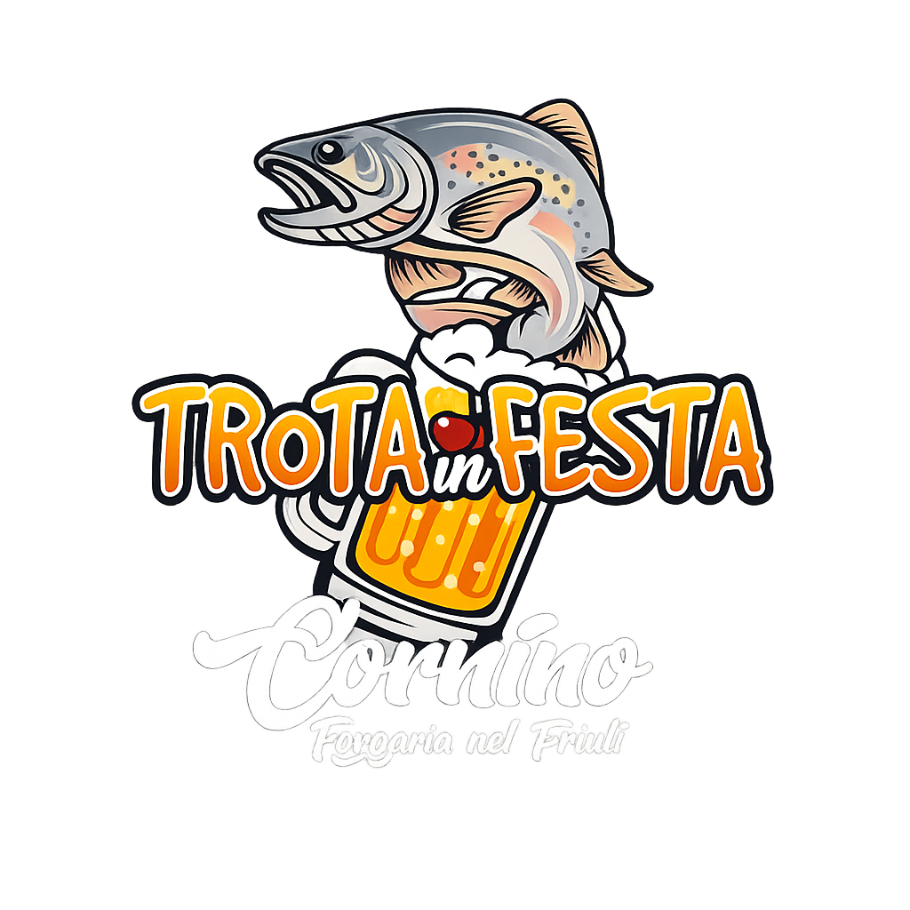
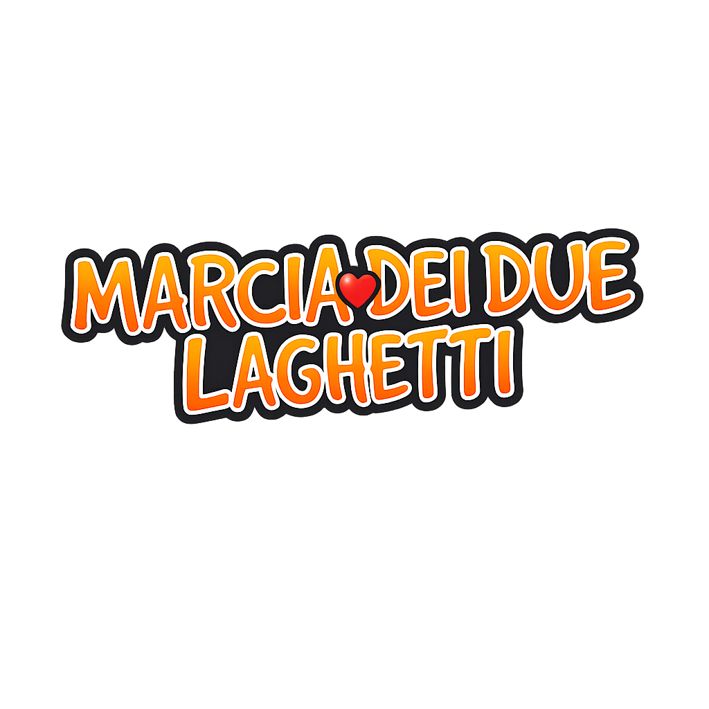
CORNINO • DOMENICA 14 GIUGNO
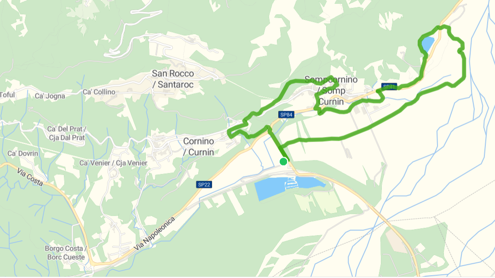
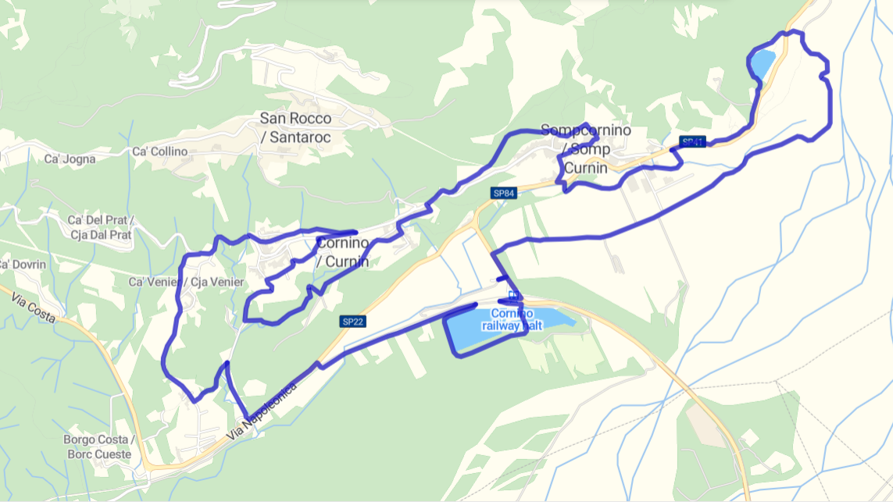
Usa scarpe da trail o scarponcini (Percorso Rosso). Evita scarpe a suola liscia.
Porta almeno 1L d'acqua. Sono presenti 3 ristori lungo i percorsi lunghi.
Vesti a strati ("a cipolla") e porta una giacca leggera anti-vento/pioggia.








